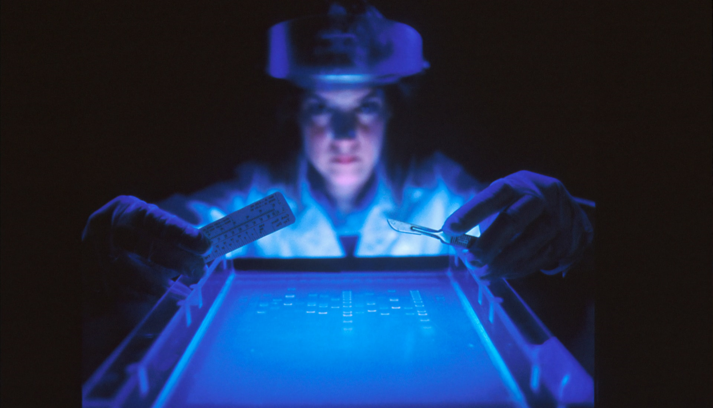

La génétique ainsi que la génomique sont probablement les discipline qui ont connu le plus d’attention cette dernière décennie dans le monde scientifique. En effet, beaucoup d’avancée dans la matière ont été présenté et la plus marquante d’entre elles est, sans aucun doute, le séquençage complet de l’ADN humain en 2003 par le Human Genome Project. Ceci à permis plusieurs études telle que l’hérédité de certaines maladies ou plus généralement, des secrets du corps humain.
Depuis, une question majeure a été soulevée : « et si on modifiait le génome humain »? Le génome de plusieurs organismes a déjà été modifié auparavant pour leurs donner des traits désirables : ils sont communément appelé OGM. Il n’est pas farfelu d’étendre cette idée à l’humain. En outres, quel avenir accompagne la modification de l’ADN humain? Dr. Jennifer Doudna de l’université de Californie estime qu’en moins de 30 ans, il serait possible de faire pratiquement n’importe quel changement au génome humain. Donc, ceci marquera l’avènement d’une conception humaine complètement artificielle. Il serait possible de choisir quel trait donner à un enfant et le rendre invulnérable à n’importe quelle maladie.
Or, ceci est un grand enjeu éthique. En effet, un humain à déjà été modifié. En novembre 2018, He Jiankui, scientifique chinois, modifie le génome de deux filles jumelles pour les rendre invulnérable au VPH, car leur père était à risque. Il à été condamné à 3 ans de prisons pour son expérience avec des embryons humains.
Il est clair que le monde n’est pas près pour ce genre de d’application, mais, d’ici 20 ou 30 ans, est-ce que se sera toujours le cas? Si oui, serons-nous toujours humains à proprement dire?
Entrée par Alexis Ramon
Référence : PARSONS, Paul « Could we make a superhuman? » Science Focus , 28 novembre 2021, URL: https://www.sciencefocus.com/future-technology/could-we-make-a-superhuman/ (consulté le 28 novembre 2021)